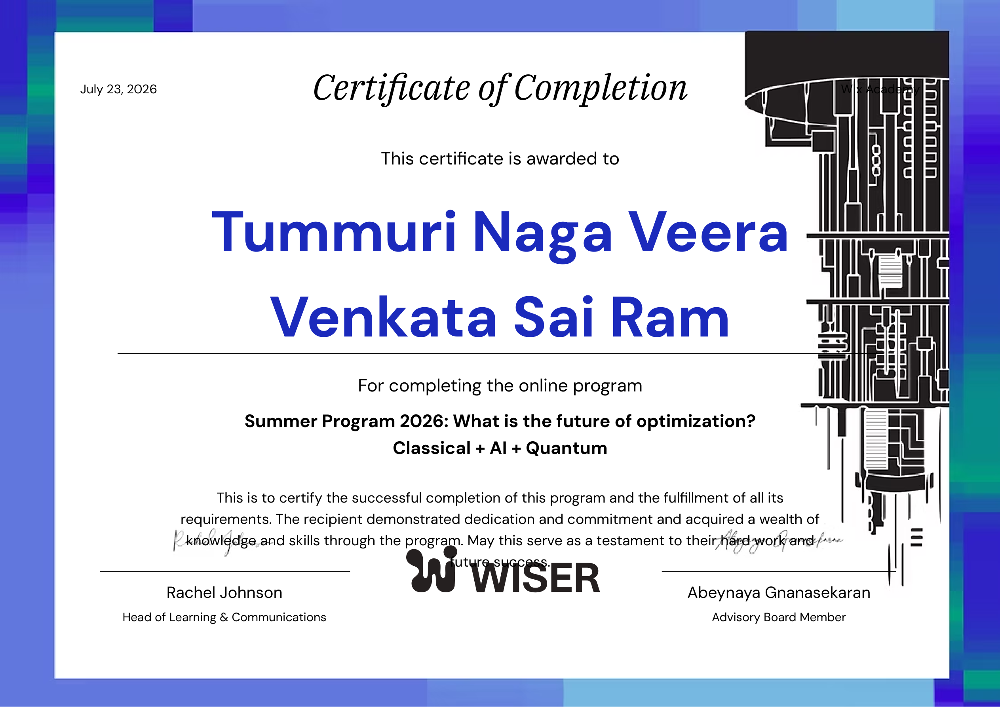
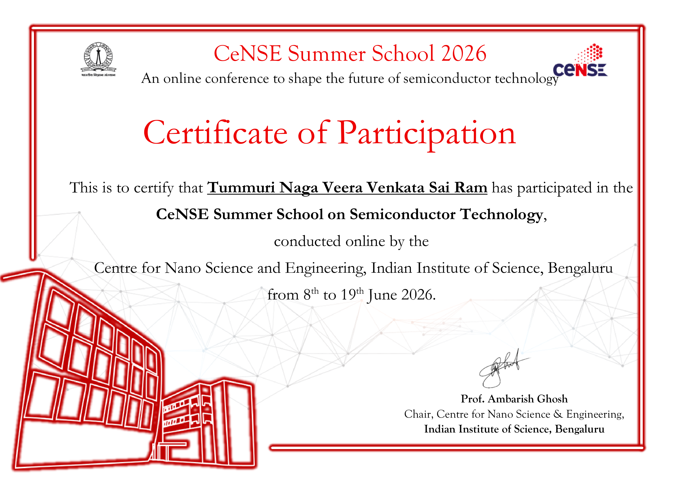
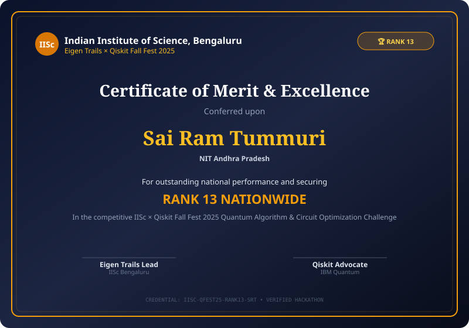
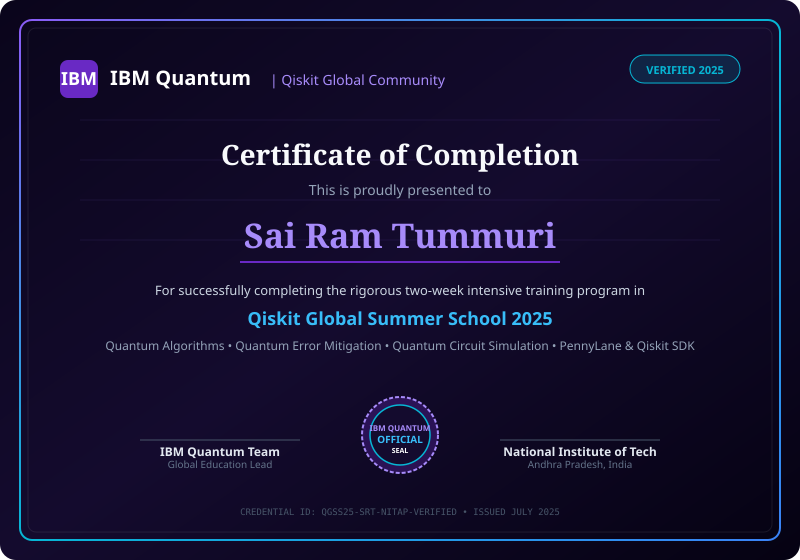

Quantum Computing
Exploring Hilbert space transformations, quantum circuit synthesis in Qiskit and PennyLane, stabilizer-based quantum error correction, and quantum machine learning.
The Quantum Computing Journey
My quantum computing path began with mastering quantum mechanics and linear algebra — matrix representations of unitaries, tensor products of vector spaces, Dirac bra-ket notation, and density matrices.
Through intensive training in the IBM Qiskit Global Summer School 2025 and earning the Rank 13 nationwide honor at the IISc × Qiskit Fall Fest 2025, I expanded from standard algorithm design into the critical frontier of Quantum Error Correction (QEC) and fault-tolerant architecture.
Live Quantum Visualizer • Bloqqer
Quantum & Specialized Certifications

QCourse 581-1: Quantum Science & Technologies
Undergraduate level (3 ECTS credits, 80 study hours). Comprehensive modules: Quantum Error Correction (QEC), Quantum Key Distribution (QKD), and Quantum Machine Learning (QML).

Optimization: Classical + AI + Quantum
Certificate of Completion for research and study in future optimization paradigms combining classical algorithms, machine learning, and quantum approaches.

CeNSE Summer School: Semiconductor Tech
Certificate of Participation awarded by the Centre for Nano Science and Engineering, IISc Bengaluru (8th–19th June 2026) for semiconductor fabrication and device physics.

IISc × Qiskit Fall Fest 2025 (Eigen Trails)
National hackathon on competitive quantum algorithm optimization and circuit synthesis, securing Rank 13 nationwide standing.

Qiskit Global Summer School 2025
Two-week intensive training program on quantum algorithms, quantum error mitigation, and quantum circuit simulation with PennyLane & Qiskit SDK.
Verified National Achievements
IISc × Qiskit Fall Fest 2025 (Eigen Trails)
Ranked 13th across the nation in the highly competitive quantum hackathon organized by IISc Bengaluru and IBM Quantum. Demonstrated quantum circuit optimization and algorithmic problem solving under strict gate-depth constraints.
ATF 2025 Stage-2 Coding Assessment Qualification
Qualified for the competitive Stage-2 Assessment of the ATF 2025 National Talent Challenge, placing within the top 8% of student engineering participants across India through rigorous algorithmic coding and logic tests.
Quantum Projects & Explorations
3-Qubit Repetition & Stabilizer Syndrome Circuit
Constructed bit-flip and phase-flip error correction circuits using parity check ancilla qubits. Implemented syndrome measurements to detect single-qubit errors without collapsing the underlying encoded quantum state.
Grover's Search & Phase Inversion Oracles
Implemented Grover's unstructured database search algorithm on an N-qubit quantum register. Synthesized custom phase-kickback oracles and the Grover diffusion operator to achieve quadratic O(√N) speedup.
Variational Quantum Classifier (VQC)
Explored hybrid quantum-classical machine learning using parameterized quantum circuits (PQCs). Applied ZZFeatureMap data encoding with classical gradient-descent parameter optimization for binary dataset separation.
Quantum Research Interests
Investigating surface codes, planar code distance thresholds, and non-demolition syndrome extraction on physical superconducting qubits.
Techniques to scale utility on NISQ-era processors including Zero-Noise Extrapolation (ZNE), probabilistic error cancellation, and measurement readout calibration.
Quantum kernel methods, quantum neural network bar-plateau mitigation, and expressibility of variational quantum ansatz architectures.
Quantum phase estimation, modular exponentiation circuits, and order-finding algorithms underlying discrete log and Shor factoring schemes.
BB84 and E91 entanglement-based cryptographic key exchange protocols and quantum channel decoy-state techniques.
Cryogenic CMOS control electronics, FPGA-based pulse generation, and high-frequency microwave transmission line engineering for transmon qubits.